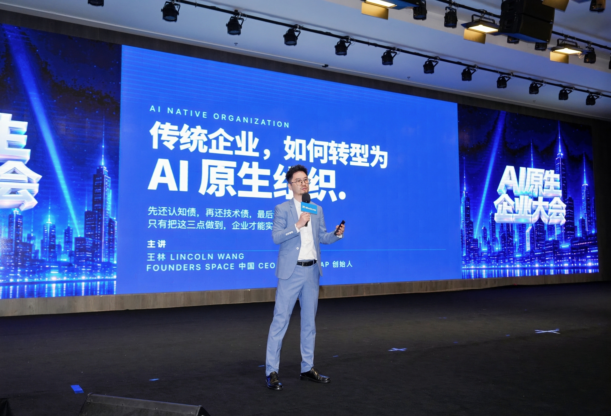
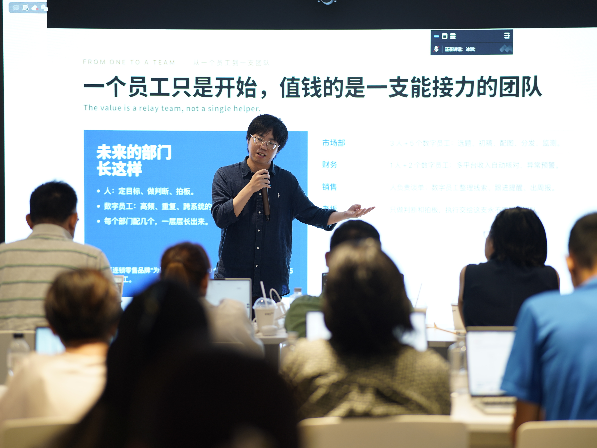
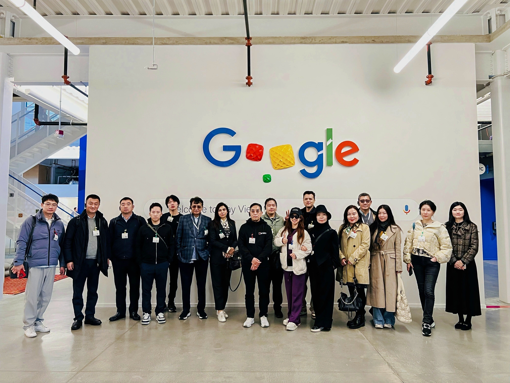
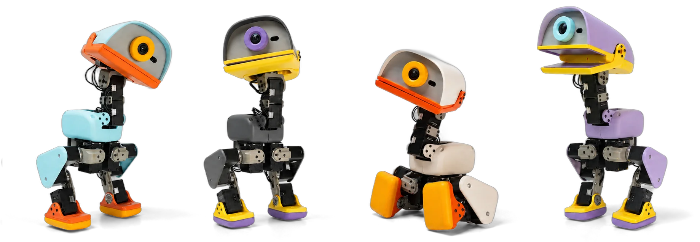

品牌系统
让输出符合统一规范Logo · 字体 · 色彩 · 模板
从超级个体，到超级组织，再到商业模式创新
同样的工具，正在拉开不同的可能。
你提出意图，Agent 开始工作。
执行能力扩大了，判断仍然需要你
从视觉表达，到音乐创作。
让你的积累，随时可用。
用 Muse，从一封询盘开始。
先完成一件过去做不了的事。
能力在增长，上下文没有流动。
构建组织记忆
品牌系统 × 视觉记忆
Logo · 字体 · 色彩 · 模板



图片 · 场景 · 来源 · 使用权限
同一件事，要有共同认可的依据
菜品 / 配置
批准 / 生效时间
门店 / 批次
责任人 / 原始记录
草稿不是当前事实；冲突由责任人确认。
业务负责人确认，Agent 按权限使用
Ontology：让数据、判断与行动连在一起。
菜品 — 原料 — 门店
替换条件 · 成本规则
更新 · 通知 · 采购
Agent 推进工作，人处理关键判断
新能力，值得一个新的商业问题
从回答问题，到持续受托。
回答问题
构建与验证
跨工具交付
持续受托
从一个聊天入口，到一个长期合作的角色。
把生活目标，变成持续行动
有记忆，也有自己的云电脑
持续存在，持续承担任务
GEO 带来发现，服务接口承接行动。
把业务能力，变成可授权执行的动作
Agent理解需求并下单，企业接住订单。
从改善现有业务，到创造新的消费需求
| 创新层级 | 流程Process | 技术Technology | 商业模式Business model |
|---|---|---|---|
| LEVEL 1做得更好 | 视频制作与发布CapCut × ChatGPT | 询价与对账简道云 · AI 采购 | 提供 CLI 服务Canva · CLI / MCP |
| LEVEL 2换一种做法 | 跨系统流程自动化RPA 工具 · 影刀 | 说出意图 → 文字网易叭哥说 | 按服务结果收费Intercom Fin · AI 客服 |
| LEVEL 3创造新需求 | AI 漫剧创作TapNow | 情感陪伴机器人Microduck | 免费内容 + 增值服务红果短剧 |
按主要创新点归类 · 新需求，也包括新的参与方式与消费场景
同样的目标，更短的路径。
从敲键盘，到说出你的想法。
外部社交媒体 × 内部业务数据
从需求信号，到研发行动。
构建企业经营决策中枢
AI 理解变化，
优化系统给出方案，人来确认。
自媒体内容 × 广告投放素材
更快制作，更快测试，更快迭代。
实体机器人 × AI 内容新供给

可训练、可互动的机器人
AI 扩展内容供给，打开产品创新空间
一次全员培训，一条协同流程，一项 Agent 服务
The future is already here —— William Gibson
it’s just not very evenly distributed.

从一个真实业务问题开始